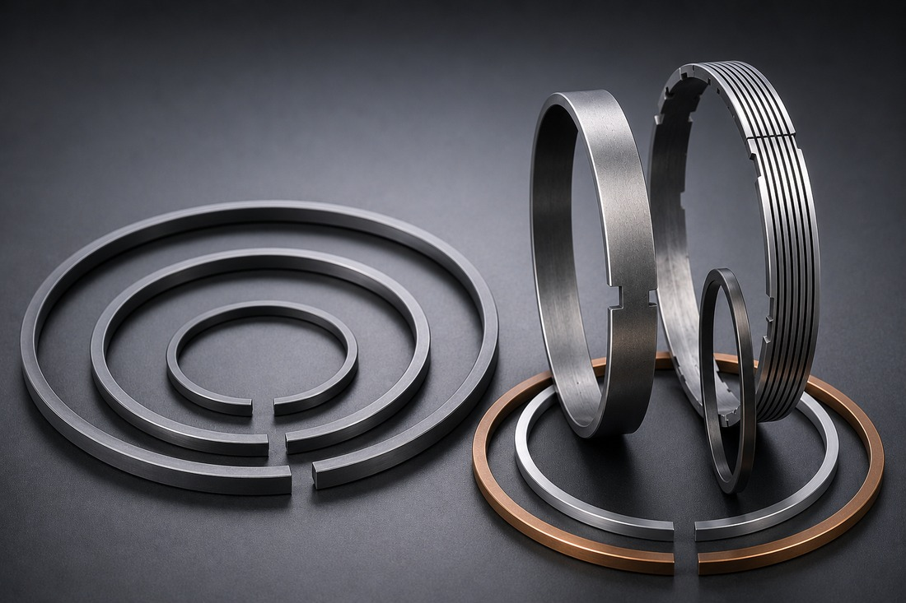
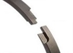
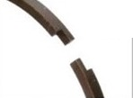
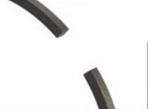
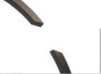
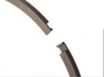

피스톤링Piston Ring
유압 변속기·클러치·토크컨버터 등 회전·동력전달 장치에 사용되는 피스톤 링입니다. 조인트(컷) 형상별로 씰링 성능과 조립성을 최적화해 제작합니다. 문의 시 실린더 최소 내경, 링 폭, 반경방향 두께, 조인트 형식, 재질을 알려주시면 규격 검토를 도와드립니다.Piston rings used in hydraulic transmissions, clutches and torque converters. Joint/cut geometry is optimized per application for sealing performance and ease of assembly. For a quote, please provide the minimum cylinder diameter, ring width, radial wall thickness, joint style and material.

작동 원리 & 구조Principle & Structure
링이 실린더 벽에 면압을 형성해 오일 흐름과 밀봉을 제어하며, 조인트(컷) 형상에 따라 밀봉·배유 성능이 달라집니다. 테이퍼 페이스는 실린더 벽 면압이 높아 빠르게 안착되고, 벤티드 오일링은 슬롯을 통해 배유 경로를 형성하며, 후크 조인트는 카운터보어·블라인드 조립 등 링 구속이 필요한 유압 변속기·클러치·토크컨버터에 가장 많이 사용됩니다.The ring forms a sealing contact pressure against the cylinder wall to control oil flow; sealing and drainage behavior differ by joint/cut geometry. A taper face seats quickly with high wall pressure, a vented oil ring uses slots to form a drainage path, and a hook joint — the most common type for hydraulic transmissions, clutches and torque converters — suits applications needing ring retention such as counterbore or blind assembly.
주요 특징Key Features
- 테이퍼 페이스·앵글 컷·벤티드 오일링·스텝 컷·인터록 조인트·버트 컷·후크 조인트 등 다양한 조인트 형상 대응Wide range of joint/cut types available — taper face, angle cut, vented oil ring, step cut, interlock joint, butt cut, hook joint and more
- 후크 조인트 링은 SAE J281 규격 준수 — 조립 용이·우수한 씰링·긴 수명Hook joint rings comply with SAE J281 — easy assembly, strong sealing, long service life
- 좌측각(Left-hand) 컷이 업계 표준Left-hand cut is the industry-standard orientation
- 표준 코팅은 인산망간(마찰 저항 감소·방청, 초기 길들임에 유리)이며, 용도에 따라 크롬·주석 등 특수 도금도 대응 가능Standard coating is manganese phosphate — reduces friction, prevents rust and aids break-in; chrome, tin and other special platings are available for specific applications
- 홈 폭은 링 최대 폭보다 여유를 두고 반경방향 간극도 열팽창을 고려해 설계 — 문의 시 사양에 맞는 그루브(홈) 치수 설계를 지원해 드립니다Groove width should exceed the ring’s maximum width, and radial clearance should allow for thermal expansion — contact us for groove-dimension design support matched to your specification
- 비표준 조인트 치수 주문 제작 가능, 재질은 고강도 주철·브론즈 합금 외 니켈 레지스트 주철·스테인리스강 등으로 대안 지정 가능Non-standard joint dimensions available to order; alternative materials such as Ni-Resist cast iron or stainless steel can be specified in addition to high-strength cast iron and bronze alloy
적용 분야Applications
세부 기술자료Detailed Technical Data
아래 항목을 클릭하면 조인트 형식·소재별 세부 사양을 확인할 수 있습니다.Click either item below for detailed specifications on joint types and materials.
조인트 형식별 상세Joint Design Details
인터록·스텝컷·버트컷·앵글버트컷·후크 조인트 등 조인트 형상별 구조와 대응 직경을 도식과 함께 확인하세요.Review the structure and diameter range of interlock, step-cut, butt-cut, angle-butt-cut and hook joint geometries, with diagrams.
전체 내용 보기 →View details →소재별 상세Material Details
표준 재질인 고강도 주철(구상흑연주철)을 비롯해 주철·브론즈·니켈 레지스트·스테인리스 등 소재별 특성과 기계적 물성을 확인하세요.Review the properties of each ring material, from the standard high-strength ductile iron to cast iron, bronze, Ni-Resist and stainless steel.
전체 내용 보기 →View details →조인트 형식별 상세Joint Design Details
피스톤 링의 조인트(절개) 형상은 밀봉·배유 성능과 조립 방식을 좌우합니다. 대표적인 조인트 형식은 다음과 같습니다.The ring joint (cut) geometry determines sealing/drainage behavior and how the ring is assembled. Representative joint types are listed below.
| 도식Diagram | 조인트 형식Joint Type | 설명Description | 대응 직경Diameter Range |
|---|---|---|---|
 | 인터록 조인트Interlock Joint | 양방향 밀봉이 가능하며 개구부를 접합부 손상 없이 통과할 수 있어 유압 부품에 널리 쓰입니다.A bi-directional joint that can pass over open ports without damaging the joint tips — widely used in hydraulic components. | 약 38~1,830mm (1.5"~72") |
 | 스텝 컷 조인트Step Cut Joint | 일정 수준의 누설이 허용되는 조건에서 사용하는 양방향 조인트입니다.A bi-directional joint used where a controlled amount of leakage is acceptable. | 약 16~1,830mm (0.62"~72") |
 | 버트 컷 조인트Butt Cut Joint | 가장 널리 쓰이는 기본형 조인트입니다.The most common, basic joint style. | 약 9.5~1,830mm (0.375"~72") |
 | 앵글 버트 컷 조인트Angle Butt Cut Joint | 보어 내벽에 접합선 마모 자국이 남는 것을 방지하기 위해 사용합니다.Used to prevent the joint line from wearing a visible mark into the bore wall. | 약 9.5~1,830mm (0.375"~72") |
 | 후크 조인트Hook Joint | 링이 압축된 상태로 최종 작동 내경에 도달해야 하는 카운터보어·블라인드 조립 등에 사용되며 SAE J281 규격을 따릅니다.Used where the ring must stay compressed to reach its final working bore diameter — e.g. counterbore or blind assembly — and follows the SAE J281 standard. | 약 16~1,830mm (0.62"~72") |
소재별 상세Material Details
표준 재질은 고강도 주철(구상흑연주철)이며, 사용 환경에 따라 아래 대안 소재를 지정할 수 있습니다.The standard material is high-strength ductile (nodular graphite) iron; the alternatives below can be specified to suit the operating environment.
| 재질Material | 설명Description |
|---|---|
| 고강도 주철 (표준) Ductile Iron (Standard) | 전체 생산량의 대부분을 차지하는 기본 재질로, 페라이트 기지에 흑연이 고르게 분포합니다. ASTM A-536 기준 인장강도 약 448MPa(65,000psi)·항복강도 약 310MPa(45,000psi)·연신율 약 12%·경도 브리넬 131~220 수준입니다.The default material for most production, with graphite evenly dispersed in a ferritic matrix. Per ASTM A-536: tensile strength ≈448MPa (65,000psi), yield strength ≈310MPa (45,000psi), elongation ≈12%, hardness 131–220 Brinell. |
| 주철 Cast Iron | Class 30/40급으로 대응 가능합니다.Available in Class 30/40 grades. |
| 브론즈 합금 Bronze Alloy | 증기·해수·합성유 등 철·강을 부식시킬 수 있는 유체 환경에 적합합니다.Suited to fluid environments — steam, seawater, synthetic fluids — that would corrode iron or steel. |
| 니켈 레지스트 주철 Ni-Resist Cast Iron | 내식성·내마모성이 우수하며 중~고온 환경에서도 물성을 유지합니다.Offers strong corrosion and wear resistance and retains its properties at moderate-to-high temperatures. |
| 스테인리스강 · 특수합금 Stainless Steel & Super Alloys | 고강도가 필요하거나 극고온에서도 물성 유지가 필요한 용도에 사용합니다.Used where higher strength is required, or where properties must hold up under extremely high temperatures. |
| 플라스틱 (PTFE 등) Plastics / PTFE | 저마찰·내화학 등 특수 용도에 맞춰 다양한 컴파운드로 대응합니다.A range of compounds available for special low-friction or chemically resistant applications. |
원하는 제품 사양이 있으신가요?Need a specific specification?
치수·도면·수량을 알려주시면 담당자가 신속히 답변드립니다.Send us your dimensions, drawings and quantity for a prompt reply.